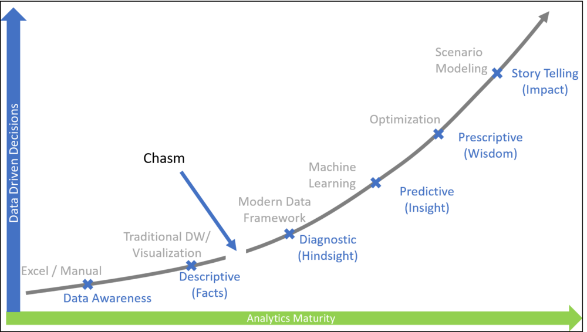

Analytics Maturity (Part 1) - Introducing the Chasm

“The world’s most valuable resource is no longer oil, but data”
— The Economist
The above statement and article by The Economist sums up very nicely what we are reading, seeing, and witnessing everyday. Read full article here. Organizations are challenged daily to come up with innovative business models, use data at the core of the business and make more data driven decisions.
I have seen few analytics maturity matrix/curves over the years. Most of them talk about what types of analytics organizations do along the maturity curve. I want to build on those models and include the kind of tools and methods that go along those maturity steps. I also want to introduce the concept of Chasm. Its essentially a bump or a gap in the journey of analytics maturity which takes a little more than usual effort to cross.

Fig 1: Analytics Maturity Curve
Level 1: Data Awareness
This is the first phase and typically not too long in terms of duration. Organizations, in this phase, realize the value of the data and acknowledge the need to use data to make decisions. For new companies and startups this might be a phase, but most of the established organizations have crossed this level.
This is the phase where lot of work happens in Excel and people tend to wrap their head around use of data. Most of the data management processes are non existent and there is no formal team managing analytics in the organizations
Level 2: Descriptive
This is the most common spot of maturity, where we see enterprises using data to make decisions. The companies are using formal Business Intelligence Tools and trying to realize the value of the investments made in the data warehouses and similar tools. The IT organizations take months/years to build new capability in data and are very inflexible in keeping up with the demands of business users.
There is a continuous need to use more data by business users, but the tools and processes are not flexible enough to make it happen. It is relatively easy to get lost in this phase and stop thinking about the next steps.
Some organizations do use advanced self service BI tools such as Power BI and Tableau and those tools provide a lot of capability to end users.
Chasm
The advanced self service tools such as Power BI and Tableau can provide a lot of value and these tools are are loaded with very advanced capabilities. However, the organizations are not ready with the right plumbing to serve the right data at the right time to these tools and hence the value outcome is not as anticipated. This is what I call Chasm. Where investments are not returning the value and the tools which were supposed to change the game become just another BI tools. This area is essentially a gap in moving from basic BI reporting to next level of maturity. It is difficult to cross this phase, because this demands more investments and focus from the organization.
There are logical steps that we can take from technology, and change management perspective which can make leaping across the chasm easier.
Level 3: Diagnostic
At level 3 of maturity, organizations have crossed the chasm and are ready to make the leap to complete data driven decisions makings. The problems of level 2 have been fixed and the organizations use some type of Modern Data Platform Architecture, along with Data Lake, to support the next level of decision making with analytics.
The architecture provides more tools and better access to data to start doing diagnostic analytics. The tools are still the same BI tools (Power BI, Tableau etc.), but introduction of data lakes and modern data platforms have given more power to the customers
Level 4: Predictive
As customers get the strong foundation built in terms or data platform and data starts logically filling the lakes, doing forecasts and using historical data to predict the future with a certain confidence interval becomes easier. A lot of companies that’s cross the chasm do it so that they can do predictive analytics . Use of machine learning techniques becomes unavoidable and for most of the organizations, cloud provides the necessary compute.
This is the phase where business models start to change and data can become part of the core business. For example, insurance companies and automakers are using telematics data to predict the automobile health or the driving behavior of the driver. These are two different models compared to traditional insurance and automotive industries
Level 5: Prescriptive
This can be perceived as being clustered with previous step. It’s still the machine learning and similar techniques at this level, but the use become different. Focus is not to improve business process and achieve efficiency using optimization.
Some techniques involve optimizations using genetic algorithms and other advanced machine learning technologies. The goal is no longer to predict with certain confidence, but to find the most optimal outcome given the constraints.
Level 6: scenario modeling
This phase is not listed in most of the maturity curve. This is more of perception and organization attitude towards embracing the data culture. Scenario modeling here refers to understanding and getting ready for all the possible outcomes of running the business. The Machine Learning, the AI and the predictions tell what will happen and what to do in certain closed system. However, when we consider all external factors in running a business there are certain unknown-unknowns. Getting ready to handle those unknowns and having the agility and power to face those scenarios using the power of data is the ultimate maturity.
In this article I have spoken about the chasm, but I will write another blog on how I work with my customers on crossing the chasm. More on that in my next article on Analytics Maturity (Part 2) - Crossing the Chasm